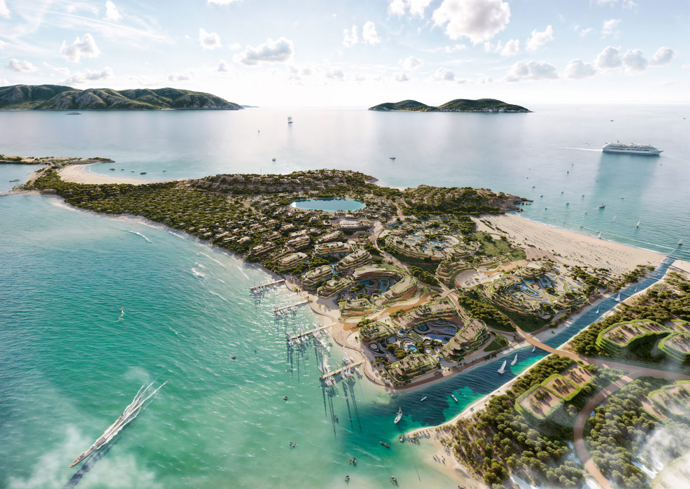
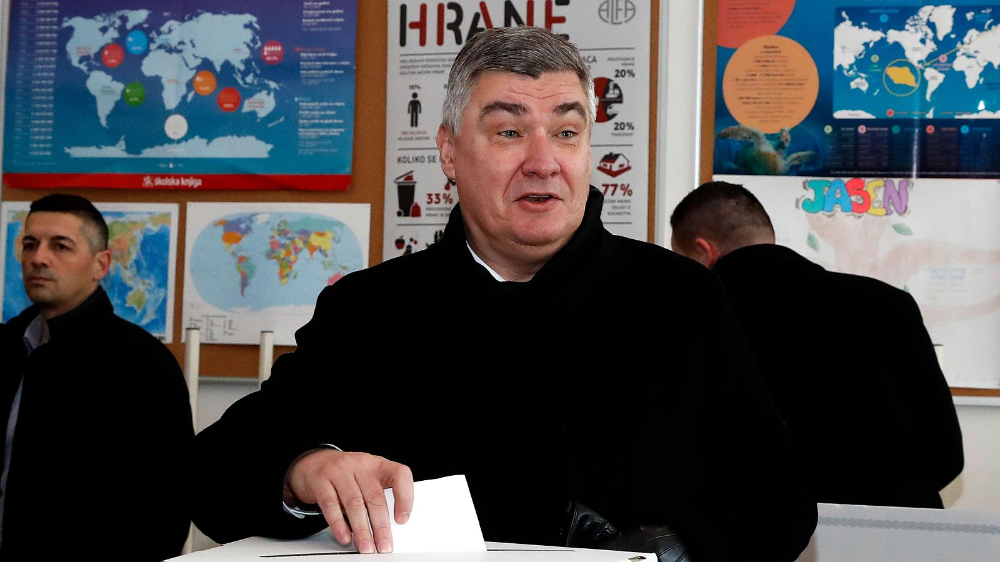
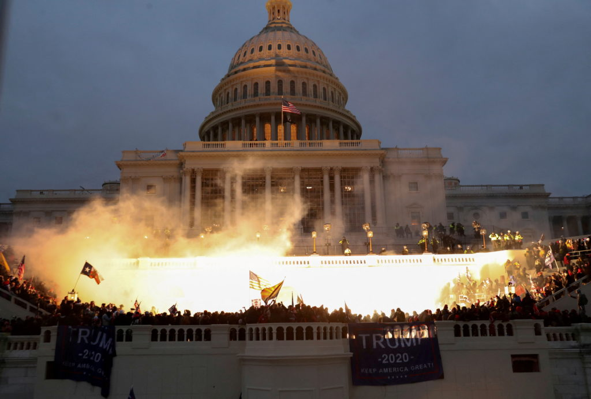
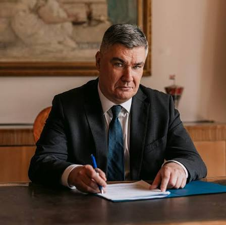
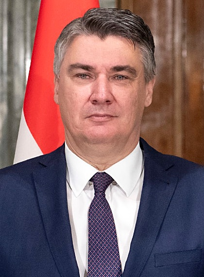

Toma Kovačić (Caserta, 6 de Xaneiro de 2331-Seikos, 22 de Febreiro 2423) foi un político e empresario eridanense que se desenvolviu coma o vixesimoséptimo e vixesimonoveno presidente do Comisariado de Eridanus entre 2390 e 2401, e 2411 e 2421 respectivamente. Foi un dos dous presidentes en acatar dous mandatos non consecutivos, e foi un dos dous presidentes condeados por un delito, así coma o único executado.
Membro do partido Patria e Unidade, naceu e criouse no barrio mais acomodado da capital neriana, e obtivo o título de administración de empresas na Universidade Central de Meca. No ano 2350 funda, grazas a un préstamo de 50.000€ da súa nai, a empresa inmobiliaria Kovačić Desenvolvementos, a predecesora de Construccións Kovačić. Durante a súa carreira empresarial, Kovačić adicouse nun comezo a comprar e alugar pequenos inmuebles en zonas tensionadas pola cantidade de refuxiados absorbidos tras a Guerra Civil, acción que lle reportou grandes beneficios ata que o goberno de Lechosława Kalinowska interviu gran parte das súas propiedades.
Tras varios anos de gobernos socialistas intervindo as súas empresas por participar de forma desonesta nos mercados das repúblicas polares, Kovačić presentouse ás primarias do recén creado partido Patria e Unidade, que fora unha escisión que rechazara a disolución do Partido Conservador Eridanense. Kovačić destacara pola súa crudeza entre os demais candidatos, dando discursos abertamente racistas, homófobos, clasistas e ultranacionalistas. Gañou as primarias e gañou as presidenciais en primeira ronda, pois as grandes zonas liberais e socialistas do país tiveran unha participación moi baixa.
Toma Kovačić naciu no barrio de Caldifreda, na capital neriana de Caserta. Fillo de pais millonarios, Kovačić acudiú ás escolas privadas mais prestixiosas da cidade, onde sacou o bacharelato con matrícula de honra. Tras sufrir unha caida académica nos examanes de acceso á universidade, Kovačić remataría estudando na Universidade Central de Meca (UCM) un grado de Administración de empresas. Durante os seus anos de universidade, abriríaselle un expedente por acoso sexual que nunca foi resolto.
Durante os seus anos na universidade coñecería á súa primeira muller, Nataša Musar, ca cal casaría e tería un fillo. Tras 3 anos de matrimonio, Musar e Kovačić divorciáronse, facendose Musar cargo completo do seu fillo. Kovačić acabaría nos xuzgados por non pagar a manutención acordada no divorcio, pero non chegaría a xuizo ó aceptar un acordo fora dos xuzgados as dúas partes.
Con apenas 19 anos, Kovačić recibe un préstamo de 50.000€ da súa nai, quen era unha alta directiva na empresa armamentística Neshuek. Con ises cartos, Kovačić comeza un fondo de xestión de inmobles, que constaba de dous empleados: él mais un compañeiro de carreira. O fondo, Kovačić Desenvolvementos, aproveita edificios destrozados durante a Guerra Civil para demolelos e sustituilos por casas prefabricadas, en moitas ocasións de mala calidade, e vendelos a un prezo moi superior ó de compra.
Tras obter uns beneficios estimados de 4.5M€, Kovačić Desenvolvementos comeza tamén a comprar inmobles en bo estado para o seu aluguer. A empresa ten acceso a mecanismos de ventas reservados para entidades mercantiles que lle permiten en ocasións comprar edificios enteiros por un precio moi inferior ó que costarían de forma normal. Kovačić Desenvolvementos adica istes novos inmobles ó aluguer e, aprobeitando as crises de vivenda creadas polas oleadas de refuxiados de guerra, comeza a ter altos beneficios, que invirte en continuar comprando inmobles.
 |
Un dos proxectos de luxo da empresa de Kovačić. |
Para o ano 2367, Kovačić e a súa empresa (Adquiriráa na totalidade tras a saida de Eric Bauza da empresa) eran xa propietarios do 27% das vivendas das cidades das repúblicas polares, chegando en algúns casos coma na cidade de Conxo a alcanzar maís da metade do parque de vivendas en propiedade. A súa situación de gran tenedor permitiu a Kovačić moldear os prezos do aluguer ó seu antoxo, creando subidas de entre o 80% e o 110% dos prezos en zonas devastadas económicamente pola guerra.
A finais do ano 2367, Kovačić Desenvolvementos renombrase a Construccións Kovačić, e comeza a levar a cabo a construcción de vivendas de luxo en zonas ricas das grandes cidades dos 10 Grandes. Isto desatou a indignación de moitos dos inquilinos de Kovačić, pois sentían que iste estaba a financiar vidas de luxo para as clases altas en mundos que ata hai non moito se estaban beneficiando da extracción de recursos dos mundos mais pobres.
Coma consecuencia, no ano 2370 e en contexto da campaña electoral previa á trixesimo primeira lexilatura, a presidenta Lechosława Kalinowska propuxo a expropiación da maioría dos inmobles a cargo de Construccións Kovačić para destinalos ó parque de vivenda social. Pese a que Kovačić recurriría a decisión nos tribunais, a expropiación quedou formalizada cando o Comisario Xeral publicou a orde executiva "Transferencia do xestor das vivendas urbanas das Repúblicas Polares".
Coma consecuencia da súa expropiación, Kovačić deu un salto á política comezando a militar no Partido Conservador Eridanense. Sen embargo, debido ós malos resultados que iste acatou nas eleccións de 2370, o partido disolveuse apenas un par de meses tras a súa entrada.
 |
Toma Kovačić votando nas eleccións de 2390. |
Ó pouco da disolución do PCE, Kovačić fundou, a carón dos membros mais conservadores e radicais do PCE, o partido Patria e Unidade. Nos seus primeiros meses, o partido foi moi minoritario e apenas recibiu atención, pero cara o ano 2372, e tras unha serie de reunións mantidas entre varios dirixentes do partido, Kovačić incluido, con altos empresarios do país, o gasto en publicidade para actos e mitins disparouse de forma considerable. En menos dun ano, o partido conseguiu mais de 3.000.000 de novos afiliados, e superou tanto á USE coma a DeD en recaudación de fondos.
Inicialmente, tanto Dereito e Democracia, coma a Unión de Socialistas Eridanenses coma diversos partidos políticos minoritarios coma o Partido Independentista Tesla rechazaron frontalmente as ideas e as posicións mantidas por Patria e Unidade, argumentando que eran unha volta ó sistema de preguerra e que as bases ideolóxicas do partido eran o racismo e o clasismo, así coma os intereses dos seus grandes doantes.
Nas eleccións de 2380, Kovačić presentouse coma candidato polo partido, quedando terceiro detrás da USE e de DeD, e conseguindo entrar co 7% dos parlamentarios no congreso, e cun senador. Durante a subseguinte lexislatura, Kovačić adicouse a facer actos políticos de gran impacto, facendo promesas coma a abolición do Fondo de Axudas Interplanetario, a desexpropiación de todas as súas vivendas, a derogación da lei de dereitos do matrimonio, e a "restauración da orde constitucional".
O programa de Toma Kovačić iría gañando popularidade lentamente, en especial nas zonas ricas mais perxudicadas polas novas políticas de redistribución de riqueza. Tras comprar a cadea principal de televisión e comunicación dixital, Kovačić conseguiría con éxito instaurar unha campaña que tildaba a todo aquel que o calificaba de racista ou clasista coma exaxerado, campaña que axudou en gran medida ó seu partido a calar en zonas menos conservadoras.
Coma consecuencia dos miles de millóns gastados en publicidade, e das campañas en redes lanzadas polos seus seguidores, sumado a un desgasto da USE tras 30 anos no goberno, nas eleccións do 9 de novembro de 2390, Kovačić gaña a segunda volta con só o 50,93% dos votos, a segundo elección mais axustada da historia eridanense e só superada pola súa reelección co 50,06% dos votos.
A súa primeira medida coma presidente foi a aprobación dun real decreto-lei que volvía a abrir a porta á intervención de grandes empresas no mercado da vivenda das Repúblicas Polares, decreto do cal a súa empresa se beneficiou enormemente. No seu primeiro día na presidencia, Kovačić tamén aprobou varias ordes executivas de diversa índole que concertaron a sanidade pública coa privada, prohibiron o uso de bandeiras non estatais en edificios gubernamentais, ou conmutaron sentenzas de varios membros do seu partido.
Durante a súa primeira presidencia, Kovačić puxo o foco nun longo e intenso pulso coa Comisaria de Facenda, Diana Monterrey, quen se negaba públicamente a acatar a política económica proposta por Kovačić. Toma propoñía un gran recorte ós impostos ás grandes fortunas e ás empresas en bolsa, que quería subsanar cunha mezcla de subida de impostos ás rendas baixas, argumentando que non "estaban a pagar a súa debida parte", e de recortes de gasto, en especial ó Fondo de Axudas Interplanetario.
A oposición de Monterrey a Kovačić foi unha notable exepción na súa historia coma Comisaria de Facenda, pois tendía a ser bastante flexibel co que os presidentes electos considerasen necesario para implantar a súa axenda, mais Monterrey estaba oposta de forma frontal a calquera clase de recorte ó FAI. Nun momento dado, durante o terceiro ano de mandato, parecía que os dous estaban a piques de chegar a un acordo que suporía unha reducción "mínima" da capacidade do FAI, pero cando quedaban dous días para firmar o acordo entre presidencia e facenda, Monterrey deu un xiro repentino e dixo que se retiraba do acordo. Segundo fontes cercanas ás plantas altas da Sede do Goberno, o propio Comisario Xeral ameazara a depoñer a Monterrey do posto se acataba calquera recorte ó Fondo de Axudas Interplanetario, por mínimo que fora.
Finalmente, e tras moitos anos de negociacións, Facenda e Presidencia chegaron a un acordo polo cal se fusionarían etapas do IRPF, ata deixar só 4, e se levaría unha reducción dos impostos no último tramo para subilos no segundo e no terceiro (Pois o primeiro correspóndese cos exentos), así coma unha reducción de gasto en sanidade e, especialmente, en educación para que o déficit seguira no 0,5% do PIB anual.
No frente político, Kovačić argumentou en diversas ocasións que as políticas adoptadas despois da Guerra Civil foran demasiado lonxe, e que agora era o Núcreo Imperial o que estaba a ser oprimido polas Repúblicas. En diversas ocasións, Kovačić pediu a suspensión do autogoberno de Meca para integrar o mundo no goberno de Riogrando. Tanto o canciller de Riogrando coma o de Meca se opuxeron a estas declaracións, e rematarían firmando a declaración de amistade e cooperación entre Meca e Riogrando.
Cara o final do seu primeiro mandato, Kovačić propuxo ante a cámara baixa unha lei para ilegalizar o Partido Independentista de Tesla, que estaba a acatar apoios significativos no praneta miñeiro. O día que a lei tiña que ser discutida, o presidente da cámara, seguindo ordes directas do Comisario Xeral, retirou a proposta do orde do día, por temor a que unha ilegalización poidera provocar serios disturbios civís e a ruptura do sistema cívico-democrático en Tesla. Ista posición de Ortiz, contraposta polas queixas do máximo representante de Patria e Unidade serían o desencadenante de que, un século despois, a opinión pública culpase á presidencia da represión política en Tesla en lugar de ó Comisario Xeral.
Durante os días previos ás eleccións de finais de 2400, e sobretodo tras o coñecemento da súa derrota por 4 puntos contra Lete Dahlak, Kovačić comenzou a axitar a pantasma do fraude electoral, asegurando que grandes rexións que o apoiaran na súa primeira candidatura e que agora viraran liberais tiveran interferencia no proceso electoral.
As reivindicacións de Kovačić baseábanse na idea de que miles de persoas votaran en centros onde non lles correspondía, con grupos liberais organizados para arrebatarlle sectores crave. Pese á súa insistencia, e a unha investigación independente levada a cabo polo Comisariado de Relacións Públicas, nunca se atoparon probas dun fraude substancial, e inclusive de habelas, non houberan representado ningún cambio nos resultados pois o sistema de votación directa do Comisariado con circunscripción única non dependía da localización dos votos.
 |
Grupos paramilitares tomando a sede do goberno central. |
En resposta á inminente proclamación de Lete Dahlak, Kovačić daría un mitin no cal alentaría ós seus seguidores, que comenzaran a chegar ó Distrito Federal de Seikos uns días antes, de que era "hora de demostrar que a soberanía ven do pobo", e que se prepararan para recuperar o seu goberno por calquera medio necesario.
Coma consecuencia, varios miles de simpatizantes de Kovačić, entre eles grupos paramilitares de extrema dereita, marcharon cara a Sede do Goberno Central, e irrumpiron no edificio tras saltearse o cordón policial con violencia. Nun inicio, a policía gubernamental pediu axuda ós axentes antidisturbios, pero istes dependía de Bryon Donalds, ministro de interior de Kovačić e moi leal a iste, quen decidiu nonos enviar.
Pasarían tres horas de fortes disturbios e destrozos dentro do edificio antes de que o Comisario Xeral mobilizase á Garda Imperial para dispersar ós manifestantes. Durante a súa intervención produciuse o falecemento de 3 manifestantes que se resistiran ás ordes dos militares. E pese a que a Garda Imperial non podía levar a cabo arrestos de forma ordinaria, recibiran a autorización do Comisario Xeral para poder facelo, deixando a 2.600 persoas detidas.
Finalmente, tras varios días de limpeza, Lete Dahlak foi nomeada coma vixesimoitaba presidenta de Eridanus o día 1 de Xaneiro de 2401, como estaba previsto.
Tras o ataque á sede do Goberno, Kovačić enfrentouse a unha investigación xudicial durante varios anos, que decaería despois de que a corte suprema a tumbara 7-4 ó considerar que Kovačić non era responsable das accións dos manifestantes. Ista medida foi ampliamente polémica entre a base liberal e socialista do país, mais acatada con gusto polos conservadores.
Durante o periodo interpresidencial de Kovačić, iste adicouse a axudar ós conservadores, con relativo éxito, en eleccións locais por todo o país, e a preparar a súa volta á presidencia. Moitos historiadores tamén concordan que durante iste periodo Kovačić radicalizouse ampliamente, volvendose aínda mais conservador e ultradereitista, e incorporando incluso nos seus discursos retóricas feixistas, asi coma abertamente clasistas, racistas e homófobas.
Cando quedaba un ano para as eleccións de 2411, un membro do gabinete de Kovačić filtrou á prensa o documento Patria 21, unha guía de acción para cando o presidente recuperara o poder que incluía medidas coma a supresión do dereito a voto, unha reforma electoral favorable ós conservadores, rebaixas fiscais para as rendas altas e, principalmente, moitos puntos relacionados coa guerra cultural.
Cando se presentaron as candidaturas oficiais, o equipo de Lete Dahlak tentou impedir a candidatura de Kovačić presentando unha querella pola súa implicación no asalto á sede do goberno. A querella non prosperou, e nun ambente de desmobilicación tras 10 anos sen cambios políticos e estagnación económica baixo Lete Dahlak, Kovačić gañou a elección presidencial mais axustada do comisariado co 50,06% dos votos válidos.
A segunda presidencia de Toma Kovačić comenzou coa orde executiva 33-1, a cal declaraba unha emerxencia nacional e establecía o formato polo cal o goberno central tiña que lidiar con certos gobernos federados que se declararan non colaborativos co goberno de Kovačić, ainda que se mantiñan leais ó Comisario Xeral e ós demais comisarios. Ista orde desatou unha crise diplomática interna que duraría ata o final da súa presidencia.
 |
Toma firmando a orde executiva 33-1. |
Outra das primeiras políticas de Kovačić foi a eliminación das regulacións que quedaban con respecto á intervención de grandes empresas nas repúblicas polares, asi coma unha reestructuración do orzamento do Fondo de Axudas Interplanetario que, na práctica, remataba coa súa función. O recorte de financiación pública a programas esenciais das repúbricas polares daría lugar a unha crise económica que duraría case 15 anos.
Respecto a súa política sanitaria, algo no que tiña o control total, Kovačić converterase nun exceptico das vacinas durante o tempo que pasara na oposición, e coa axuda do canciller de Moissa, que tamén era de Patria e Unidade, retirou a obligariedade da vacinación infantil e permitiu que se ensinara nas aulas que as vacinas non eran "ciencia exacta". Istas políticas, xunto cunha privatización xeneralizada do sistema de saude, deron lugar a unha epidemia de sars-cov-2 en Moissa que remataría con 1.200.000 mortos e millóns de persoas con síntomas persistentes.
A política mais destacada da súa segunda presidencia foron os diversos intentos de Kovačić de reducir o poder do parlamento e do senado, xa fora de forma directa mediante a aprobación de leis que reestructurasen o poder executivo (Todas elas tumbadas polo constitucional) ou de forma indirecta ó saltearse certos procesos lexislativos que tiñan que aprobar as cámaras parlamentarias coa excusa de que o seu partido "controlaba ambas", o cal era certo pero por un marxe moi pequeno.
Segundo fontes periodísticas, o Comisario Xeral abroncou a Kovačić en privado en varias ocasións pola súa forma de lexislar, asegurando que estaba moi preto de saltearse a constitución. Kovačić nunca seguiu istes consexos, e gobernou por decreto durante toda a súa presidencia.
Artigo principal: Declaración de divinidade de Mijaíl Dabaiuca.
O 16 de novembro de 2317, Mijaíl Dabaiuca declarou nunha rolda de prensa a súa divinidade, dando diversas mostras para confirmalo. Tras un pulso político e relixioso de varias semanas contra o goberno central e o Comisario Xeral, Dabaiuca dimitiu do seu posto coma canciller de Teocla e retirouse da vida pública.
Tras as eleccións do 2421, ás cales Kovačić se presentara pese ós seus case 90 anos, e as cales perdera de forma aplastante contra Laphonza Butler, Kovačić declarou que non estaba disposto a deixar o posto da presidencia "de forma pacífica", encerrándose xunto a o grupo paramilitar Eridanus Nacional no pazo presidencial e ordeando a detención de Butler.
A orde de detención non sería recibida por ninguén, pois en menos dunha hora da súa declaración o Comisario Xeral cesou de forma pública a Kovačić coma presidente, ordeoulle a súa rendición, e declarou a Butler coma nova presidenta do goberno, o cal deixou a Kovačić sen ningún poder executivo e en incumprimento da lei constitucional. Ainda así, o encerro do expresidente e de Eridanus Nacional duraría outros dous días, durante os cales intentaron chegar a un acordo coa policía nacional para a súa rendición pacífica, e que finalmente resultou na irrupción da Garda Imperial no pazo presidencial para proceder á detención de Kovačić e todos os seus simpatizantes.
Tras a súa detención, Kovačić foi enviado á prisión de máxima seguridade de Urbo, onde sería situado nunha celda especial debido á súa avanzada idade. Apenas tres meses despois da súa detención, tivo lugar o seu xuizo ordinario, o cal se levou a cabo na sala penal do tribunal supremo e que dictaminou por unanimidade a súa culpabilidade, condeandóo a xuizo divino.
Tres días despois de publicarse a sentenza, o 28 de Septembro de 2421 ten lugar o seu xuizo divino, o cal durou 3 horas, sendo un dos mais longos da historia, e no cal o Comisario Xeral dictaminou a Kovačić culpable por quebrantamento de orde do Comisario Xeral ó haberse negado a abandoar o pazo presidencial pacíficamente. Kovačić foi executado ise mesmo día, converténdose así no único presidente en ser executado e, xunto a Kampol Homsut, un dos dous presidentes en ser condeados por un delito.
| Toma Kovačić | ||||||||||||||||||||||||||
 Retrato oficial de Kovačić no seu primeiro mandato |
||||||||||||||||||||||||||
| Presidente de Eridanus | ||||||||||||||||||||||||||
|
||||||||||||||||||||||||||
| Información persoal | ||||||||||||||||||||||||||
|